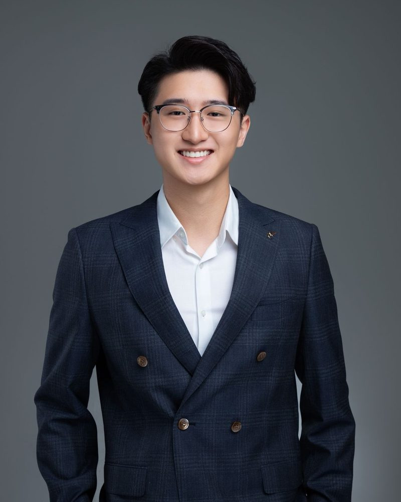

你好，我是高浩維 Anson Ko
我是香港註冊物理治療師，於尖沙咀 Amazing Medical 應診。
2017 至 2024 年，我是香港水球隊運動員，曾代表香港參加第十九屆亞運會及亞洲水球錦標賽。七年的訓練及比賽，讓我深切體會運動員所承受的訓練量和比賽壓力，以及受傷後希望盡快重返訓練的心情。
退役後，我擔任香港水球隊物理治療師，並於 2025 年全國運動會負責港隊的場邊傷患處理及恢復安排。我亦曾連續兩季於香港超級聯賽擔任香港足球會的場邊物理治療師。作為拔萃男書院舊生，我現時亦為母校運動隊提供物理治療支援。
在診所，我為不同人士處理痛症及運動創傷，包括長時間伏案工作的上班族、週末運動愛好者、游泳及水上運動人士，以及手術後需要復康的人士。
2017–2024香港水球隊運動員
第十九屆亞運會（水球）
現任香港水球隊物理治療師
學歷
- Bachelor of Science (Hons) in Physiotherapy – The Hong Kong Polytechnic University
- Postgraduate Diploma in Modern Acupuncture for Rehabilitation – HKU SPACE
- Advanced Certificate in Sport and Exercise Nutrition – HKU SPACE
專業資格及證書
- 香港註冊物理治療師 Registered Physiotherapist (Hong Kong)
- Certified DMA Clinical Pilates Clinician
- Certified Kinesio Taping Practitioner
診症語言：廣東話、英語
我的註冊資料可於物理治療師管理委員會的註冊名單核實。
我亦會於 Instagram 分享痛症及運動相關的健康知識。